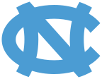

UNC Chapel Hill
Grok Bot
Student Build Night
One hour to build · then demo live
6:00 – 8:00pm · demos at 7:30

UNC
SpaceXAI
Cursor
Icebreaker
What’s the weirdest / coolest way you’ve used AI?
Turn to a neighbor · 90 seconds
We’ll steal a few shout-outs
Open
Who we are
- [Host names]
- Local builders · Innovate Carolina / 1789 crew
- Here to help you ship tonight
Campus
The student innovation path
- Innovate Carolina — UNC I&E hub
- 1789 — incubator, mentors, mixers, Venture Fund
- Launch Chapel Hill — accelerator downtown
SpaceXAI
SpaceXAI / Cursor
Students
1789, quick
- Mentors + community
- Mixers and pitches
- Seed rounds via the 1789 Venture Fund
Downtown
Launch Chapel Hill
- Innovate Carolina Junction (downtown)
- Launch Powered by KPMG · Launch Local
- Summer accelerators for student founders
Stack
SpaceXAI / Cursor
- Cursor is part of SpaceX / SpaceXAI
- Building useful AI: Grok, Cursor, GrokBot
- Tonight tools, courtesy of SpaceXAI
SpaceXAI
SpaceXAI / Cursor
Product
What is GrokBot?
- AI agents you spin up for real work
- Connect Gmail, Slack, calendar, the web
- Schedules · hand work off to each other
Tonight
Tonight
- ~1 hour to build something real with GrokBot
- Theme revealed here at the event
- Then you demo it live
Perks
What you get
- 1 month of Cursor Pro (GrokBot included)
- SpaceXAI / Cursor merch — stickers + keychains
- An hour to build with other builders
- A live demo slot
Rules
What counts
- Theme drops tonight — build something creative with GrokBot
- Start from existing code, APIs, or connected accounts
- Prior GrokBot experience welcome
- Solo build · talk, share, help each other
Starters
Samples (inspiration)
Course CompassFranklin After Dark
- Course Compass — semester survival
- Franklin After Dark — campus nights
- One clear job · actually useful
Clock
Build clock
- Build: ~6:35 → 7:25
- Queue: 7:25
- Live demos: 7:30
Go build.
See you at 7:30
- Theme time → then build
- Ask for help early
- See you at 7:30
Competition
Demo time · 7:30
- ~2 minutes — show what it does
- Working demo > talk about the idea
- Who it is for + the job it does
- Hosts queue · wrap by 8
Challenge
Grok Bot Student Build Day
- Build a Grok Bot that solves a real back-to-school problem
- Post your entry on LinkedIn with #GrokBotForStudents
- Subscriptions for the 10 winning builds
Install
Get the app
Scan to install Grok Bot on your device
Scan to install Grok Bot on your device